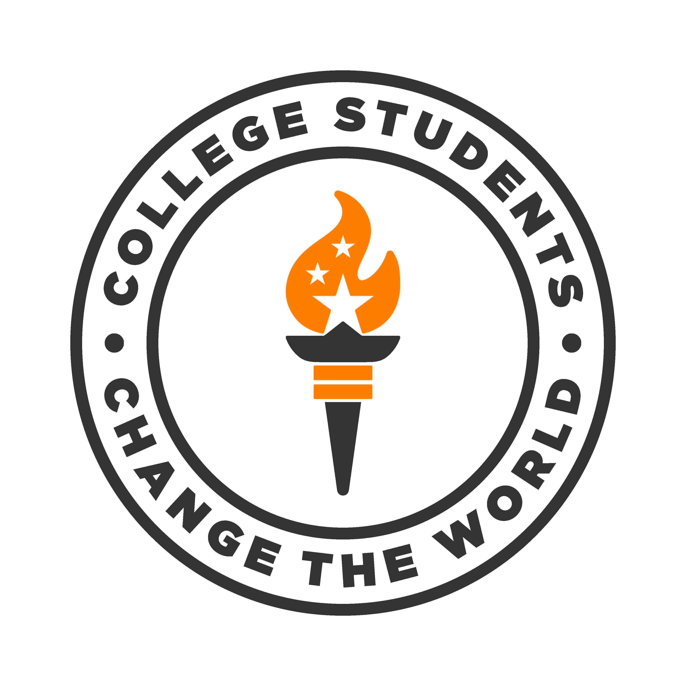

Students can and have made a difference in the world we live in today. College Students Change the World believes their stories offer relatable exemplars that inspire students to become leaders of positive impactful change. We are a community of educators and students providing open source online resources that facilitates the collection, organization, and sharing student leadership success stories to educate the personally and socially leaders of tomorrow.
Contact Dr. Karen D. Boyd, at kboyd14@utk.edu to join us in collecting and sharing these stories.